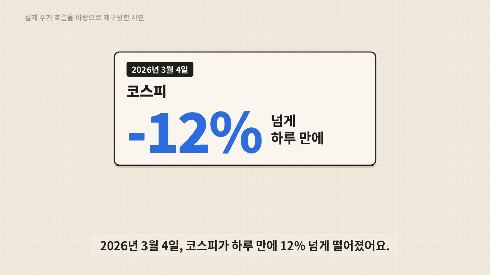
- 1 2026년 3월 4일, 코스피가 하루 만에 12% 넘게 떨어졌어요.
연출 1: 뉴스 카드(2026년 3월 4일 · 코스피) → -12% 카운트다운(파랑) → '넘게 · 하루 만에'
연결 근거 문장 1 '2026년 3월 4일, 코스피가 하루 만에 12% 넘게 떨어졌어요' → 날짜 칩·코스피·-12%(파랑=하락)
scene_plan.md · 투자 교육용 영상이며 특정 종목의 매수·매도 권유가 아닙니다.
연출 1: 뉴스 카드(2026년 3월 4일 · 코스피) → -12% 카운트다운(파랑) → '넘게 · 하루 만에'
연결 근거 문장 1 '2026년 3월 4일, 코스피가 하루 만에 12% 넘게 떨어졌어요' → 날짜 칩·코스피·-12%(파랑=하락)
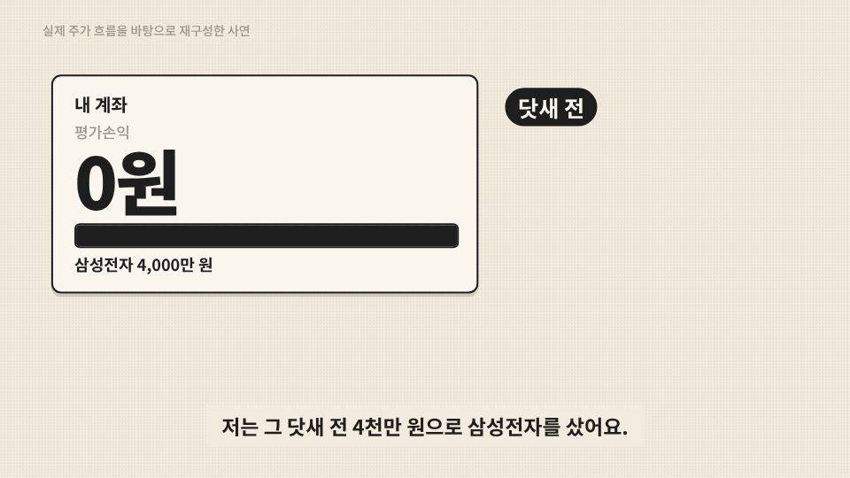
연출 2: 계좌 카드 등장, 막대가 삼성전자(잉크)로 0 → 4,000만 원, 평가손익 0원 + 오른쪽 '닷새 전' / 3: 뉴스 카드 '반도체가 잘 팔린다' + '오래 들고 갈 생각' / 4: '산 다음 날' + 뉴스 카드 '미국·이스라엘, 이란 공격' / 5: 카드 머리 '3월 3일', '연휴 뒤 첫 거래일', 평가손익 0 → -400만 원(파랑) / 6: 생각 말풍선 '금방 회복하겠지'
연결 근거 문장 2 '닷새 전 4천만 원으로 삼성전자를 샀어요' → 계좌 카드·막대 4,000만 원 / 3 '반도체가 잘 팔린다는 뉴스 … 오래 들고 갈 생각' → 뉴스 카드·칩 / 4 '산 다음 날, 미국과 이스라엘이 이란을 공격' → 뉴스 카드 / 5 '연휴 뒤 첫 거래일인 3월 3일, 계좌는 -400만 원' → 카드 머리 날짜·손익 카운트 / 6 '금방 회복하겠지 하고 버텼죠' → 말풍선
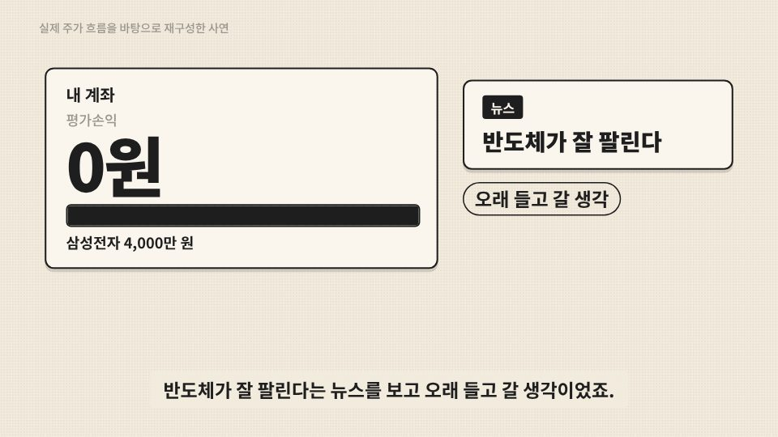
연출 2: 계좌 카드 등장, 막대가 삼성전자(잉크)로 0 → 4,000만 원, 평가손익 0원 + 오른쪽 '닷새 전' / 3: 뉴스 카드 '반도체가 잘 팔린다' + '오래 들고 갈 생각' / 4: '산 다음 날' + 뉴스 카드 '미국·이스라엘, 이란 공격' / 5: 카드 머리 '3월 3일', '연휴 뒤 첫 거래일', 평가손익 0 → -400만 원(파랑) / 6: 생각 말풍선 '금방 회복하겠지'
연결 근거 문장 2 '닷새 전 4천만 원으로 삼성전자를 샀어요' → 계좌 카드·막대 4,000만 원 / 3 '반도체가 잘 팔린다는 뉴스 … 오래 들고 갈 생각' → 뉴스 카드·칩 / 4 '산 다음 날, 미국과 이스라엘이 이란을 공격' → 뉴스 카드 / 5 '연휴 뒤 첫 거래일인 3월 3일, 계좌는 -400만 원' → 카드 머리 날짜·손익 카운트 / 6 '금방 회복하겠지 하고 버텼죠' → 말풍선
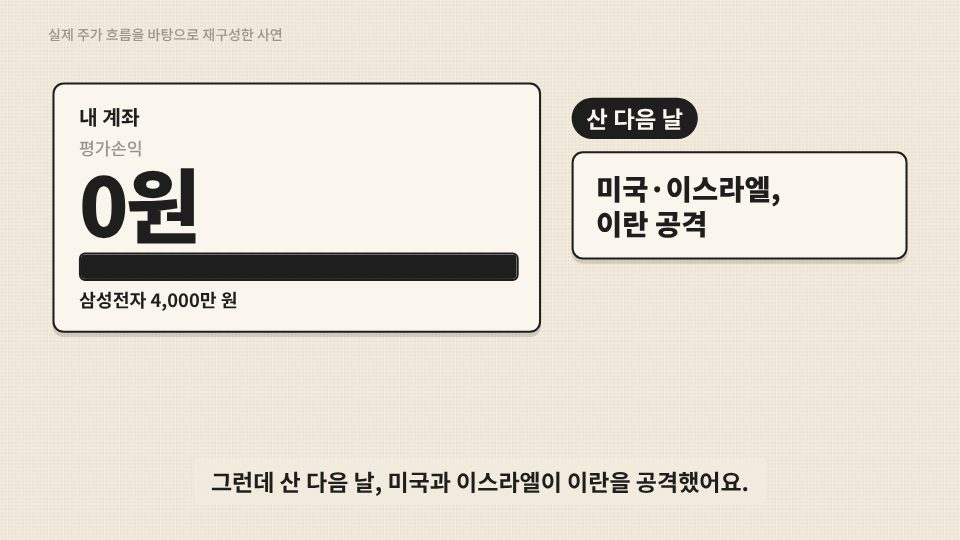
연출 2: 계좌 카드 등장, 막대가 삼성전자(잉크)로 0 → 4,000만 원, 평가손익 0원 + 오른쪽 '닷새 전' / 3: 뉴스 카드 '반도체가 잘 팔린다' + '오래 들고 갈 생각' / 4: '산 다음 날' + 뉴스 카드 '미국·이스라엘, 이란 공격' / 5: 카드 머리 '3월 3일', '연휴 뒤 첫 거래일', 평가손익 0 → -400만 원(파랑) / 6: 생각 말풍선 '금방 회복하겠지'
연결 근거 문장 2 '닷새 전 4천만 원으로 삼성전자를 샀어요' → 계좌 카드·막대 4,000만 원 / 3 '반도체가 잘 팔린다는 뉴스 … 오래 들고 갈 생각' → 뉴스 카드·칩 / 4 '산 다음 날, 미국과 이스라엘이 이란을 공격' → 뉴스 카드 / 5 '연휴 뒤 첫 거래일인 3월 3일, 계좌는 -400만 원' → 카드 머리 날짜·손익 카운트 / 6 '금방 회복하겠지 하고 버텼죠' → 말풍선
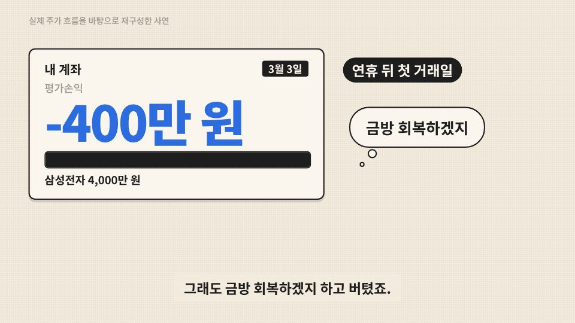
연출 2: 계좌 카드 등장, 막대가 삼성전자(잉크)로 0 → 4,000만 원, 평가손익 0원 + 오른쪽 '닷새 전' / 3: 뉴스 카드 '반도체가 잘 팔린다' + '오래 들고 갈 생각' / 4: '산 다음 날' + 뉴스 카드 '미국·이스라엘, 이란 공격' / 5: 카드 머리 '3월 3일', '연휴 뒤 첫 거래일', 평가손익 0 → -400만 원(파랑) / 6: 생각 말풍선 '금방 회복하겠지'
연결 근거 문장 2 '닷새 전 4천만 원으로 삼성전자를 샀어요' → 계좌 카드·막대 4,000만 원 / 3 '반도체가 잘 팔린다는 뉴스 … 오래 들고 갈 생각' → 뉴스 카드·칩 / 4 '산 다음 날, 미국과 이스라엘이 이란을 공격' → 뉴스 카드 / 5 '연휴 뒤 첫 거래일인 3월 3일, 계좌는 -400만 원' → 카드 머리 날짜·손익 카운트 / 6 '금방 회복하겠지 하고 버텼죠' → 말풍선
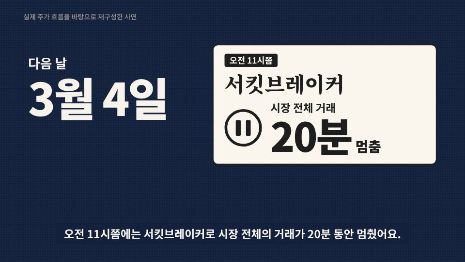
연출 7: 찢어진 종이 전환(네이비), '다음 날' + 큰 날짜 '3월 4일' / 8: 서킷브레이커 카드(오전 11시쯤) → 일시정지 표시 + '시장 전체 거래 20분 멈춤'
연결 근거 문장 7 '하지만 다음 날은 차원이 달랐습니다' → 3월 3일 다음 날 = 3월 4일 / 8 '오전 11시쯤 서킷브레이커로 시장 전체의 거래가 20분 동안 멈췄어요' → 카드·일시정지·20분
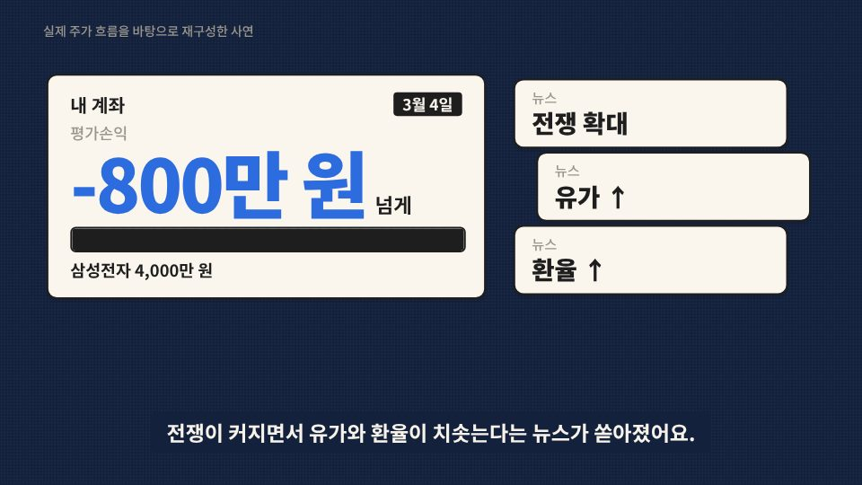
연출 9: S02의 계좌 카드(머리 '3월 4일') 평가손익 -400만 → -800만 원 + '넘게', 카드가 흔들림 / 10: 뉴스 카드 3장이 쌓임 '전쟁 확대' · '유가 ↑' · '환율 ↑' / 11: 뉴스 퇴장, 말풍선 '이러다 전부 잃겠다' → '장 마감 직전 · 전부 매도' 도장, 카드 막대가 현금(빗금)으로 바뀌고 '삼성전자 4,000만 원'에 취소선
연결 근거 문장 9 '계좌는 어느새 -800만 원이 넘어' → 손익 카운트·흔들림 / 10 '전쟁이 커지면서 유가와 환율이 치솟는다는 뉴스가 쏟아졌어요' → 뉴스 카드 3장 / 11 '이러다 전부 잃겠다는 생각에 장 마감 직전 모두 팔았어요' → 말풍선·전부 매도·막대가 현금으로
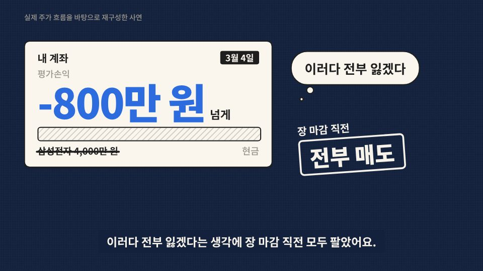
연출 9: S02의 계좌 카드(머리 '3월 4일') 평가손익 -400만 → -800만 원 + '넘게', 카드가 흔들림 / 10: 뉴스 카드 3장이 쌓임 '전쟁 확대' · '유가 ↑' · '환율 ↑' / 11: 뉴스 퇴장, 말풍선 '이러다 전부 잃겠다' → '장 마감 직전 · 전부 매도' 도장, 카드 막대가 현금(빗금)으로 바뀌고 '삼성전자 4,000만 원'에 취소선
연결 근거 문장 9 '계좌는 어느새 -800만 원이 넘어' → 손익 카운트·흔들림 / 10 '전쟁이 커지면서 유가와 환율이 치솟는다는 뉴스가 쏟아졌어요' → 뉴스 카드 3장 / 11 '이러다 전부 잃겠다는 생각에 장 마감 직전 모두 팔았어요' → 말풍선·전부 매도·막대가 현금으로
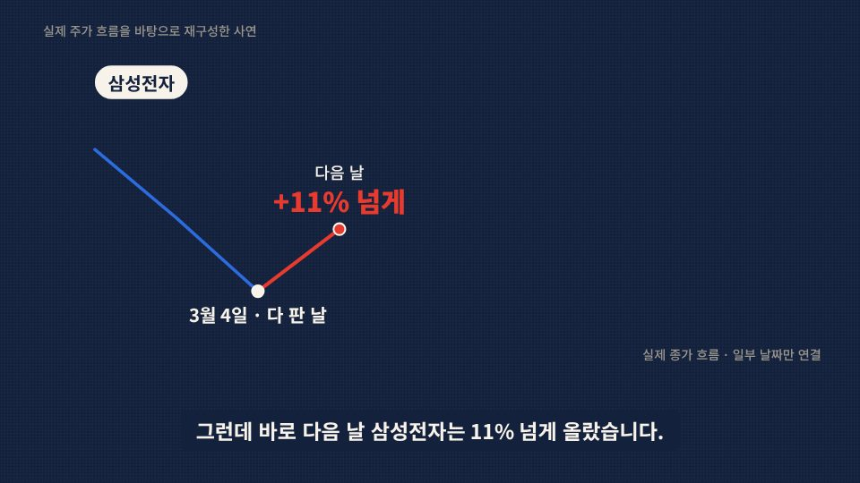
연출 12: 삼성전자 실제 종가 선 — 산 날 → 3월 4일 다 판 날(회색) → 다음 날 빨강 상승 '+11% 넘게' / 13: '판 가격' 점선, 7주 뒤 점(점선 연결) '판 가격보다 +30% 넘게'(형광펜) / 14: '처음 산 가격' 선이 그어지고 끝점이 그 위에 있음
연결 근거 문장 12 '바로 다음 날 삼성전자는 11% 넘게 올랐습니다' / 13 '7주 뒤에는 제가 판 가격보다 30% 넘게' / 14 '처음 산 가격도 이미 넘어'. 선의 꺾임은 README 실제 종가(2/27 216,500 · 3/3 195,100 · 3/4 172,200 · 3/5 191,600 · 4/23 224,500원), 숫자는 표시하지 않음. 3/5 → 4/23 사이는 점선(3/31 저점 생략)
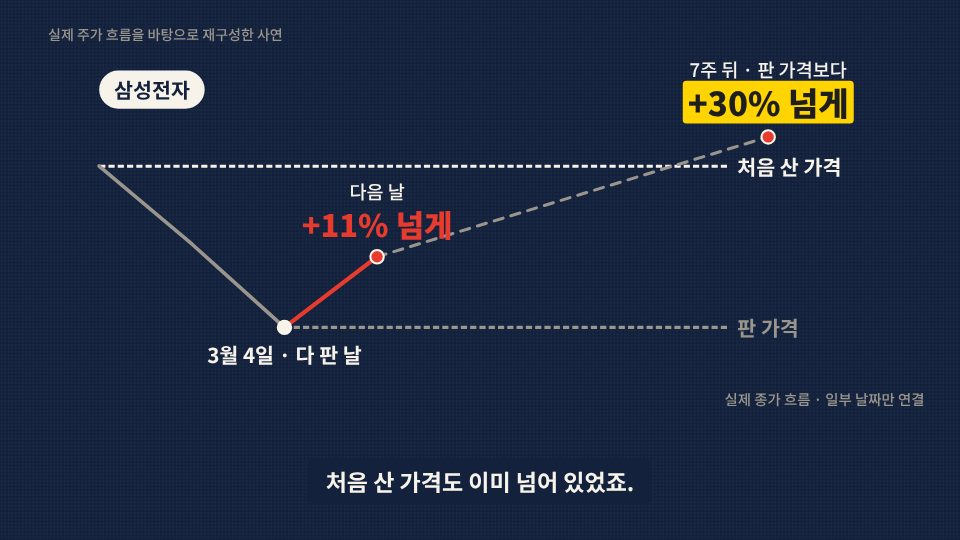
연출 12: 삼성전자 실제 종가 선 — 산 날 → 3월 4일 다 판 날(회색) → 다음 날 빨강 상승 '+11% 넘게' / 13: '판 가격' 점선, 7주 뒤 점(점선 연결) '판 가격보다 +30% 넘게'(형광펜) / 14: '처음 산 가격' 선이 그어지고 끝점이 그 위에 있음
연결 근거 문장 12 '바로 다음 날 삼성전자는 11% 넘게 올랐습니다' / 13 '7주 뒤에는 제가 판 가격보다 30% 넘게' / 14 '처음 산 가격도 이미 넘어'. 선의 꺾임은 README 실제 종가(2/27 216,500 · 3/3 195,100 · 3/4 172,200 · 3/5 191,600 · 4/23 224,500원), 숫자는 표시하지 않음. 3/5 → 4/23 사이는 점선(3/31 저점 생략)
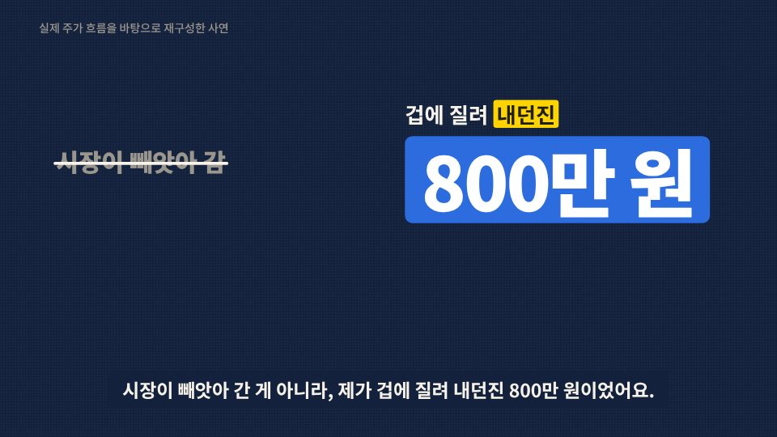
연출 15: 왼쪽 '시장이 빼앗아 감'(회색)에 취소선 → 오른쪽 '겁에 질려 내던진'(형광펜) + 파랑 상자 800만 원 / 16: 모두 퇴장, 휴대폰 화면 '삼성전자 · 다음 날 +11%'와 빨강 상승 선
연결 근거 문장 15 '시장이 빼앗아 간 게 아니라, 제가 겁에 질려 내던진 800만 원' / 16 '다음 날 빨갛게 오른 주가를 보면서' → 휴대폰의 빨강 +11%(S05 다음 날 상승과 같은 값)
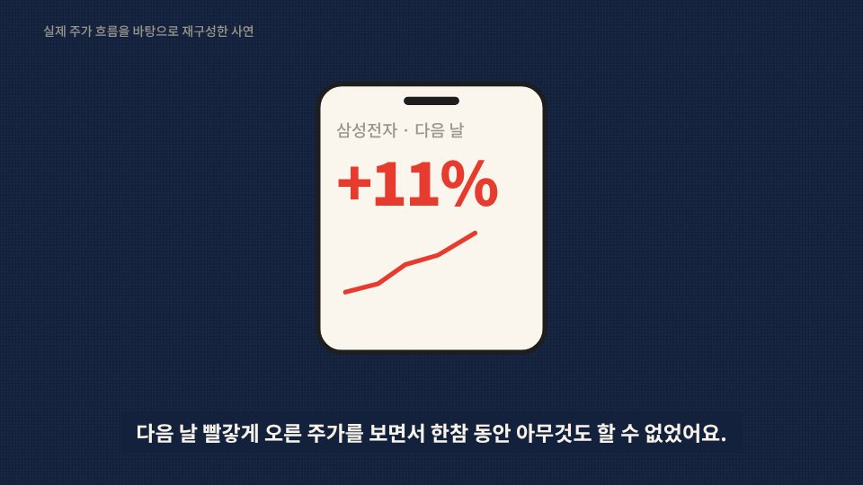
연출 15: 왼쪽 '시장이 빼앗아 감'(회색)에 취소선 → 오른쪽 '겁에 질려 내던진'(형광펜) + 파랑 상자 800만 원 / 16: 모두 퇴장, 휴대폰 화면 '삼성전자 · 다음 날 +11%'와 빨강 상승 선
연결 근거 문장 15 '시장이 빼앗아 간 게 아니라, 제가 겁에 질려 내던진 800만 원' / 16 '다음 날 빨갛게 오른 주가를 보면서' → 휴대폰의 빨강 +11%(S05 다음 날 상승과 같은 값)
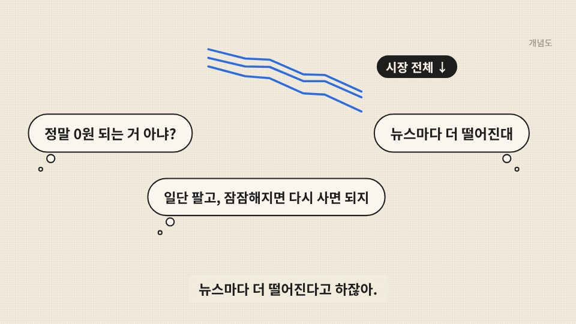
연출 17: 파랑 선 3개가 함께 내려감 + '시장 전체 ↓' (개념도) / 18·19·20: 생각 말풍선이 자막마다 하나씩 / 21: 모두 퇴장, '겁 > 판단' 칩 → 가격 선(개념도)과 아래 '파는 양' 막대 — 가격이 가장 낮은 점(파랑)과 가장 높은 막대, '가장 많이 팖'(형광펜)
연결 근거 문장 17 '시장 전체가 무너지는 날' → 함께 내려가는 선 / 18 '이러다 정말 0원' / 19 '일단 팔고 잠잠해지면 다시 사면 되지' / 20 '뉴스마다 더 떨어진다' → 말풍선 3개 / 21 '겁이 판단을 앞서면, 가격이 가장 낮을 때 가장 많이 팔게' → 칩·최저점·가장 높은 막대
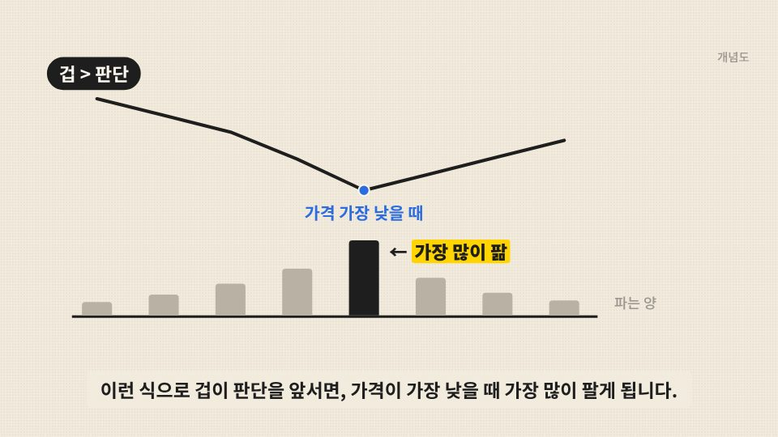
연출 17: 파랑 선 3개가 함께 내려감 + '시장 전체 ↓' (개념도) / 18·19·20: 생각 말풍선이 자막마다 하나씩 / 21: 모두 퇴장, '겁 > 판단' 칩 → 가격 선(개념도)과 아래 '파는 양' 막대 — 가격이 가장 낮은 점(파랑)과 가장 높은 막대, '가장 많이 팖'(형광펜)
연결 근거 문장 17 '시장 전체가 무너지는 날' → 함께 내려가는 선 / 18 '이러다 정말 0원' / 19 '일단 팔고 잠잠해지면 다시 사면 되지' / 20 '뉴스마다 더 떨어진다' → 말풍선 3개 / 21 '겁이 판단을 앞서면, 가격이 가장 낮을 때 가장 많이 팔게' → 칩·최저점·가장 높은 막대
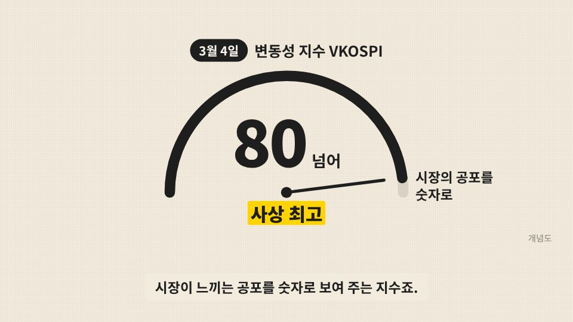
연출 22: '3월 4일' 칩 + '변동성 지수 VKOSPI', 80 카운트업 + '넘어', '사상 최고'(형광펜) / 23: 숫자를 둘러싼 반원 게이지가 그려지고 바늘이 끝까지, '시장의 공포를 숫자로'
연결 근거 문장 22 '3월 4일, 변동성 지수 VKOSPI는 80을 넘어 사상 최고' / 23 '시장이 느끼는 공포를 숫자로 보여 주는 지수' → 게이지
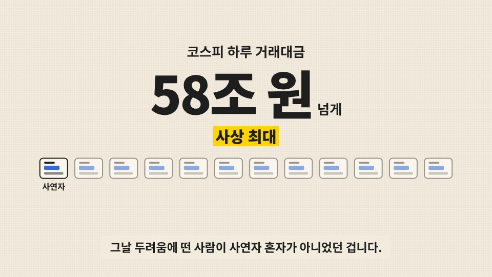
연출 24: '코스피 하루 거래대금' 58조 원 카운트업 + '넘게', '사상 최대'(형광펜) / 25: 작은 계좌 아이콘 12개 — 첫째는 '사연자'(진하게), 나머지가 차례로 / 26: 모두 퇴장, '하락장에서 전부 팔기, 왜 위험할까?' + 번호 01~04
연결 근거 문장 24 '코스피 하루 거래대금도 58조 원을 넘어 사상 최대' / 25 '두려움에 떤 사람이 사연자 혼자가 아니었던' → 사연자 아이콘 + 다른 계좌들 / 26 '전부 팔아 버리는 게 왜 위험한지 하나씩' → 문제 4개 번호
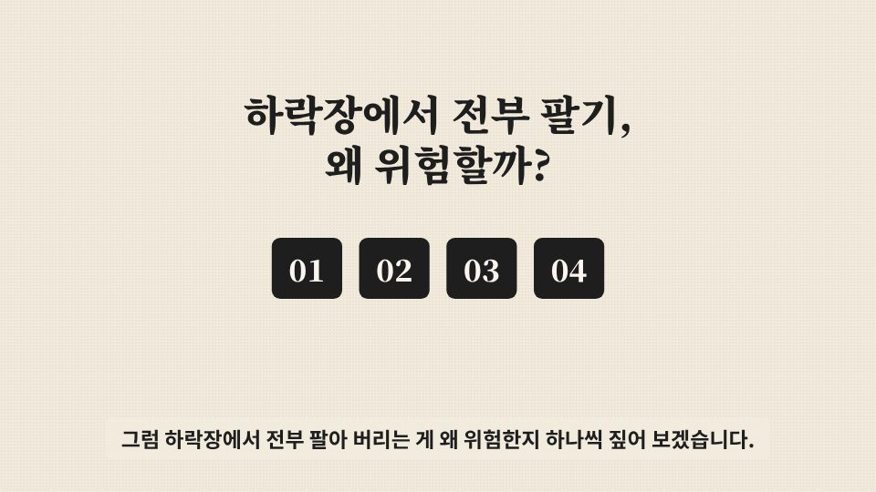
연출 24: '코스피 하루 거래대금' 58조 원 카운트업 + '넘게', '사상 최대'(형광펜) / 25: 작은 계좌 아이콘 12개 — 첫째는 '사연자'(진하게), 나머지가 차례로 / 26: 모두 퇴장, '하락장에서 전부 팔기, 왜 위험할까?' + 번호 01~04
연결 근거 문장 24 '코스피 하루 거래대금도 58조 원을 넘어 사상 최대' / 25 '두려움에 떤 사람이 사연자 혼자가 아니었던' → 사연자 아이콘 + 다른 계좌들 / 26 '전부 팔아 버리는 게 왜 위험한지 하나씩' → 문제 4개 번호
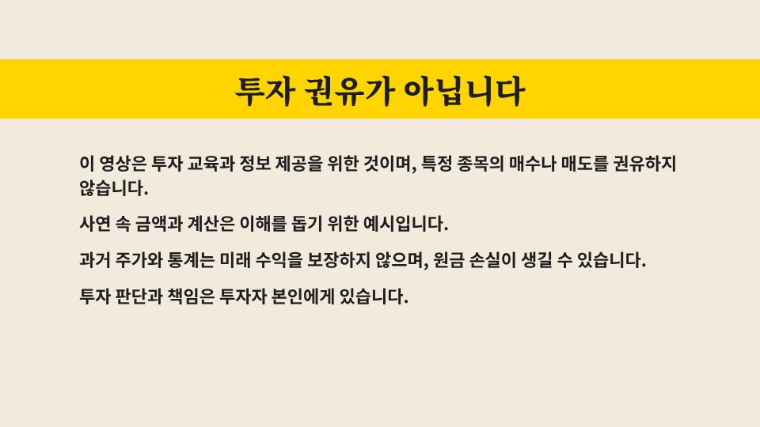
투자 권유가 아닙니다 — 이 영상은 투자 교육과 정보 제공을 위한 것이며, 특정 종목의 매수나 매도를 권유하지 않습니다. / 사연 속 금액과 계산은 이해를 돕기 위한 예시입니다. / 과거 주가와 통계는 미래 수익을 보장하지 않으며, 원금 손실이 생길 수 있습니다. / 투자 판단과 책임은 투자자 본인에게 있습니다.
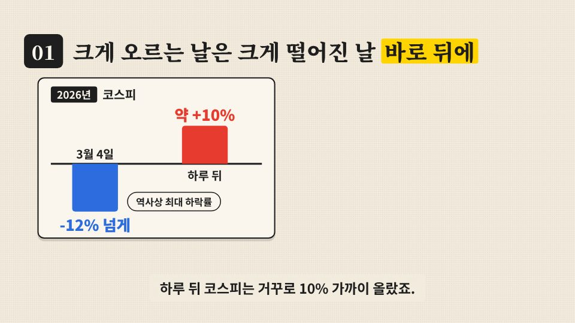
연출 27: 번호 타이틀 01 '크게 오르는 날은' / (뒷줄) '크게 떨어진 날 바로 뒤에'('바로 뒤에' 형광펜) / 28: 사례 카드① '2026년 · 코스피', 3월 4일 아래로 파랑 막대 '-12% 넘게' + '역사상 최대 하락률' / 29: 카드①에 위로 빨강 막대 '하루 뒤 약 +10%' / 30: 사례 카드② '2020년 코로나' / 31: 카드②에 '코스피', '3월 19일 -8% 넘게' → '다음 날 +7% 넘게'
연결 근거 문장 27 '크게 오르는 날이 크게 떨어진 날 바로 뒤에' / 28 '3월 4일은 코스피 역사상 하루 하락률이 가장 큰 날' (-12%는 문장 1) / 29 '하루 뒤 코스피는 10% 가까이' / 30 '2020년 코로나 때도' / 31 '3월 19일 8% 넘게 … 다음 날 7% 넘게'. 막대 길이는 README 실제 등락률(-12.06 · +9.63 · -8.39 · +7.44%), 두 카드 같은 비율
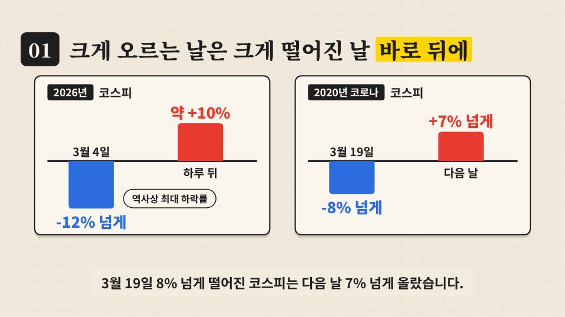
연출 27: 번호 타이틀 01 '크게 오르는 날은' / (뒷줄) '크게 떨어진 날 바로 뒤에'('바로 뒤에' 형광펜) / 28: 사례 카드① '2026년 · 코스피', 3월 4일 아래로 파랑 막대 '-12% 넘게' + '역사상 최대 하락률' / 29: 카드①에 위로 빨강 막대 '하루 뒤 약 +10%' / 30: 사례 카드② '2020년 코로나' / 31: 카드②에 '코스피', '3월 19일 -8% 넘게' → '다음 날 +7% 넘게'
연결 근거 문장 27 '크게 오르는 날이 크게 떨어진 날 바로 뒤에' / 28 '3월 4일은 코스피 역사상 하루 하락률이 가장 큰 날' (-12%는 문장 1) / 29 '하루 뒤 코스피는 10% 가까이' / 30 '2020년 코로나 때도' / 31 '3월 19일 8% 넘게 … 다음 날 7% 넘게'. 막대 길이는 README 실제 등락률(-12.06 · +9.63 · -8.39 · +7.44%), 두 카드 같은 비율
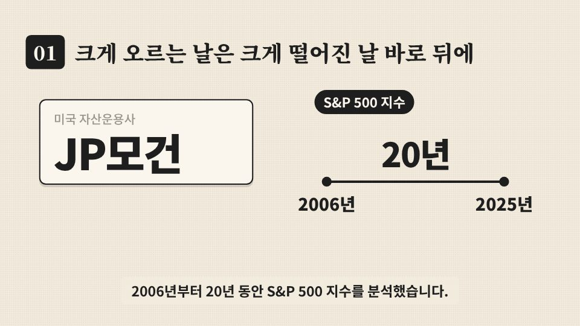
연출 32: 카드 '미국 자산운용사 · JP모건' / (뒷줄) 'S&P 500 지수' + 타임라인 2006년 → 2025년 '20년' / 33: 퇴장, 막대 비교 — '처음 1,000만 원' 점선 + 오른쪽 '계속 투자' 빨강 막대 1,000만 → 8,000만 원 넘게 / 34: 왼쪽 '가장 많이 오른 10일 놓침'(10일 형광펜) 연한 빨강 막대 3,600만 원
연결 근거 문장 32 '미국 자산운용사 JP모건이 2006년부터 20년 동안 S&P 500' (2025 = 2006 + 20 - 1) / 33 '1천만 원을 계속 넣어 뒀다면 8천만 원이 넘었습니다' / 34 '가장 많이 오른 10일만 놓쳐도 3,600만 원'. 막대 비율은 README $80,619 · $35,866 · $10,000
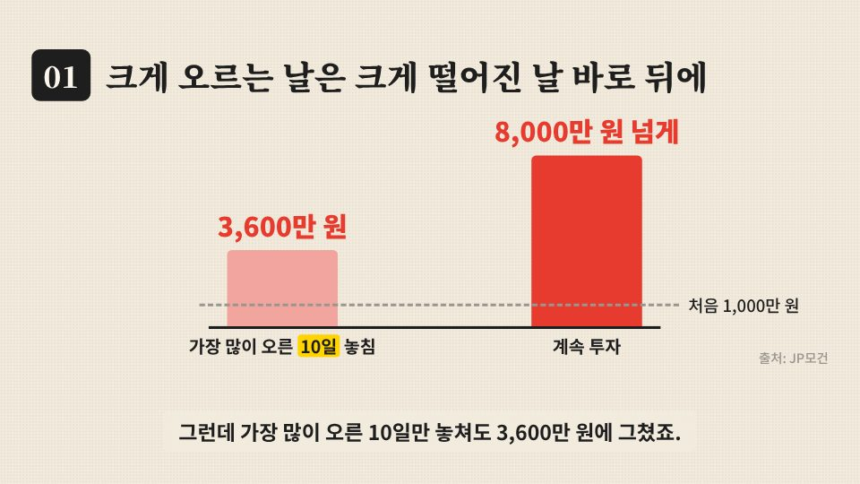
연출 32: 카드 '미국 자산운용사 · JP모건' / (뒷줄) 'S&P 500 지수' + 타임라인 2006년 → 2025년 '20년' / 33: 퇴장, 막대 비교 — '처음 1,000만 원' 점선 + 오른쪽 '계속 투자' 빨강 막대 1,000만 → 8,000만 원 넘게 / 34: 왼쪽 '가장 많이 오른 10일 놓침'(10일 형광펜) 연한 빨강 막대 3,600만 원
연결 근거 문장 32 '미국 자산운용사 JP모건이 2006년부터 20년 동안 S&P 500' (2025 = 2006 + 20 - 1) / 33 '1천만 원을 계속 넣어 뒀다면 8천만 원이 넘었습니다' / 34 '가장 많이 오른 10일만 놓쳐도 3,600만 원'. 막대 비율은 README $80,619 · $35,866 · $10,000
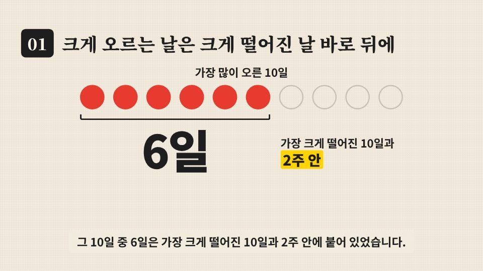
연출 35: '가장 많이 오른 10일' 빨강 점 10개 → 6개만 남고 4개는 회색, 괄호 + '6일' + '가장 크게 떨어진 10일과 2주 안'(2주 안 형광펜) / 36: '6일'·설명 퇴장, 날짜 칸 '폭락한 날 · 매도'(파랑) → 화살표 → '바로 뒤 · 반등' + ✗ '놓침'(형광펜)
연결 근거 문장 35 '그 10일 중 6일은 가장 크게 떨어진 10일과 2주 안에' → 한 줄 10칸 중 6칸 / 36 '폭락한 날 팔고 나가면 바로 뒤에 오는 반등을 놓치기 쉽다' → 매도 → 반등 놓침
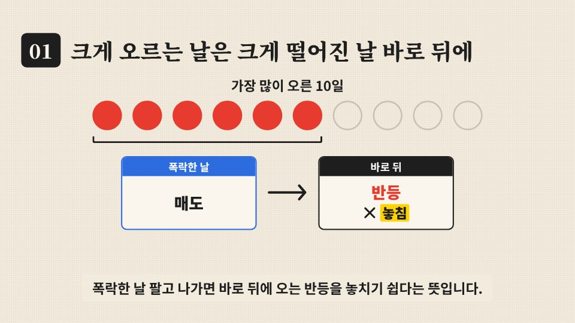
연출 35: '가장 많이 오른 10일' 빨강 점 10개 → 6개만 남고 4개는 회색, 괄호 + '6일' + '가장 크게 떨어진 10일과 2주 안'(2주 안 형광펜) / 36: '6일'·설명 퇴장, 날짜 칸 '폭락한 날 · 매도'(파랑) → 화살표 → '바로 뒤 · 반등' + ✗ '놓침'(형광펜)
연결 근거 문장 35 '그 10일 중 6일은 가장 크게 떨어진 10일과 2주 안에' → 한 줄 10칸 중 6칸 / 36 '폭락한 날 팔고 나가면 바로 뒤에 오는 반등을 놓치기 쉽다' → 매도 → 반등 놓침
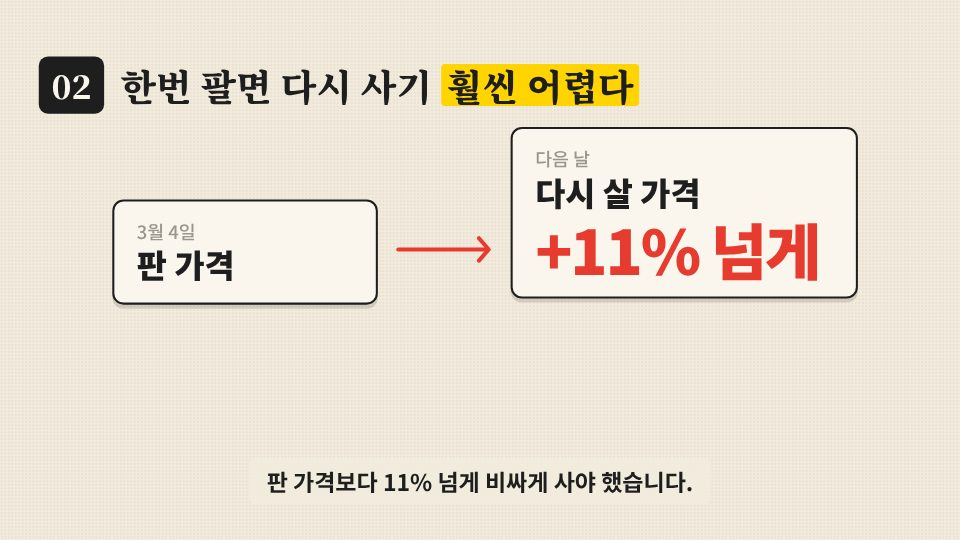
연출 37: 번호 타이틀 02 ('훨씬 어렵다' 형광펜) / 38: 왼쪽 카드 '3월 4일 · 판 가격' / (뒷줄) 빨강 화살표 → 오른쪽 위 카드 '다음 날 · 다시 살 가격 +11% 넘게' / 39: 생각 말풍선 '내가 틀렸다고 인정해야 하나…'
연결 근거 문장 37 '한번 팔고 나면 다시 사기가 훨씬 어렵다' / 38 '판 다음 날 다시 사려면 판 가격보다 11% 넘게 비싸게' (뒷줄에 +11%) / 39 '내가 틀렸다는 걸 인정해야 하니 쉽게 손이 가지 않죠' → 말풍선
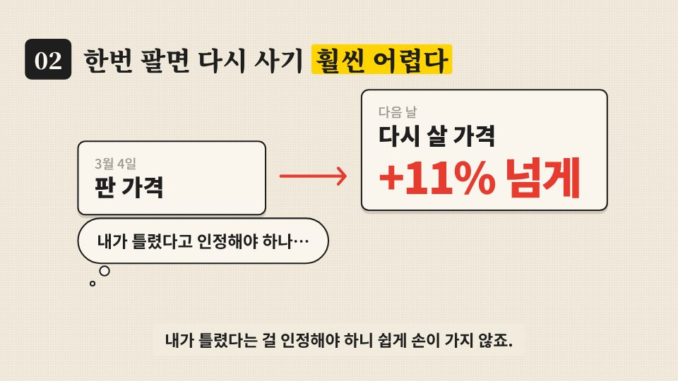
연출 37: 번호 타이틀 02 ('훨씬 어렵다' 형광펜) / 38: 왼쪽 카드 '3월 4일 · 판 가격' / (뒷줄) 빨강 화살표 → 오른쪽 위 카드 '다음 날 · 다시 살 가격 +11% 넘게' / 39: 생각 말풍선 '내가 틀렸다고 인정해야 하나…'
연결 근거 문장 37 '한번 팔고 나면 다시 사기가 훨씬 어렵다' / 38 '판 다음 날 다시 사려면 판 가격보다 11% 넘게 비싸게' (뒷줄에 +11%) / 39 '내가 틀렸다는 걸 인정해야 하니 쉽게 손이 가지 않죠' → 말풍선
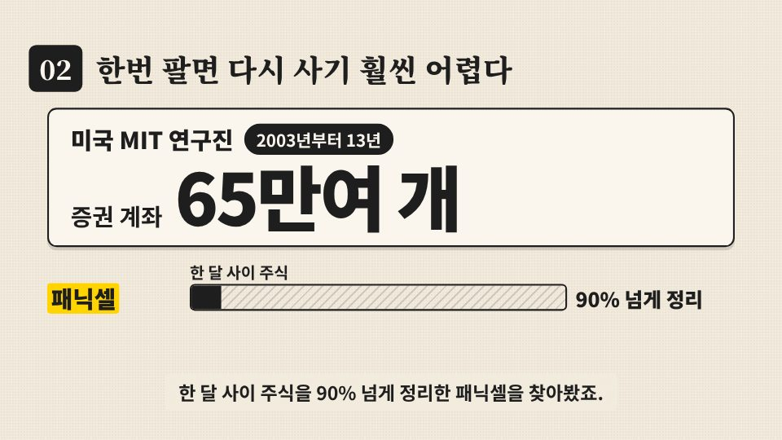
연출 40: 연구 카드 '미국 MIT 연구진' + '2003년부터 13년' / (뒷줄) '증권 계좌 65만여 개' / 41: '패닉셀'(형광펜) + '한 달 사이 주식' 막대가 10% 미만으로 줄어듦 + '90% 넘게 정리'
연결 근거 문장 40 '미국 MIT 연구진은 2003년부터 13년 동안 증권 계좌 65만여 개' (65만여 개는 뒷줄) / 41 '한 달 사이 주식을 90% 넘게 정리한 패닉셀'
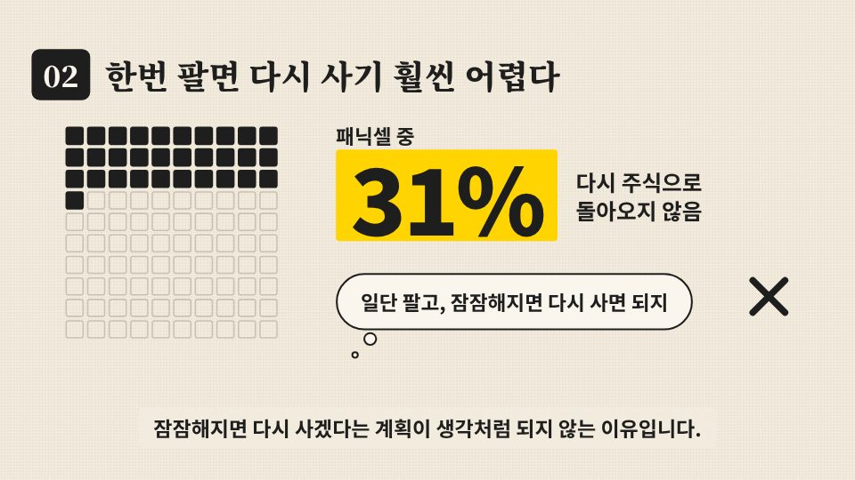
연출 42: 10×10 와플 31칸이 채워짐 + '패닉셀 중' 31%(형광펜) + '다시 주식으로 돌아오지 않음' / 43: S07의 말풍선 '일단 팔고, 잠잠해지면 다시 사면 되지'가 다시 나오고 ✗(파랑)
연결 근거 문장 42 '그중 31%는 다시는 주식으로 돌아오지 않았습니다' → 100칸 중 31칸 / 43 '잠잠해지면 다시 사겠다는 계획이 생각처럼 되지 않는' → 문장 19의 말풍선에 ✗
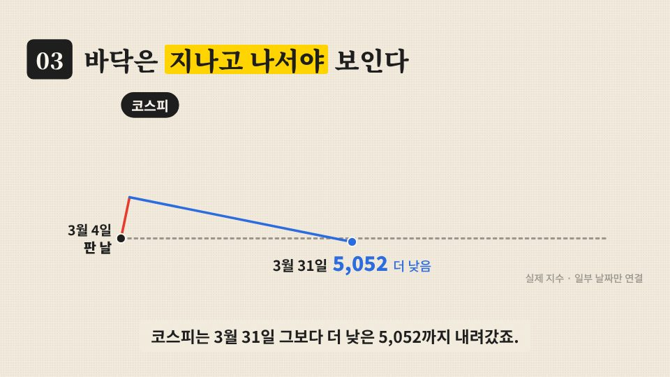
연출 44: 번호 타이틀 03 ('지나고 나서야' 형광펜) / 45: 3월 4일 '판 날' 점 + 그 높이의 회색 점선 / 46: '코스피' 칩, 실제 지수 선 3월 4일 → (다음 날 반등) → 3월 31일, 점선보다 아래 '3월 31일 5,052 더 낮음'(파랑) / 47: 빨강 선이 올라가 '한 달도 안 돼 +30% 넘게'
연결 근거 문장 45 '사연자가 판 3월 4일도 바닥은 아니었습니다' / 46 '3월 31일 그보다 더 낮은 5,052' / 47 '그 뒤 한 달도 안 돼 30% 넘게'. 점은 README 실제 종가(3/4 5,093.54 · 3/5 5,583.90 · 3/31 5,052.46 · 4/27 6,615.03), 가로는 날짜 간격 비율
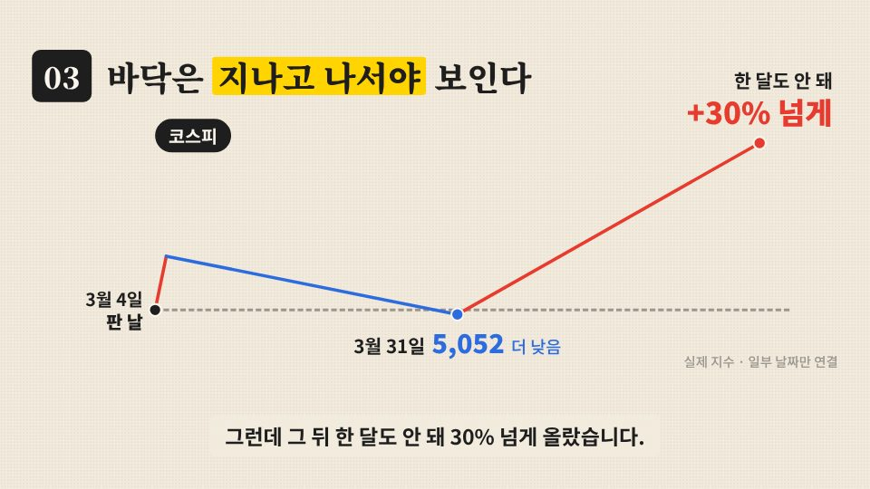
연출 44: 번호 타이틀 03 ('지나고 나서야' 형광펜) / 45: 3월 4일 '판 날' 점 + 그 높이의 회색 점선 / 46: '코스피' 칩, 실제 지수 선 3월 4일 → (다음 날 반등) → 3월 31일, 점선보다 아래 '3월 31일 5,052 더 낮음'(파랑) / 47: 빨강 선이 올라가 '한 달도 안 돼 +30% 넘게'
연결 근거 문장 45 '사연자가 판 3월 4일도 바닥은 아니었습니다' / 46 '3월 31일 그보다 더 낮은 5,052' / 47 '그 뒤 한 달도 안 돼 30% 넘게'. 점은 README 실제 종가(3/4 5,093.54 · 3/5 5,583.90 · 3/31 5,052.46 · 4/27 6,615.03), 가로는 날짜 간격 비율
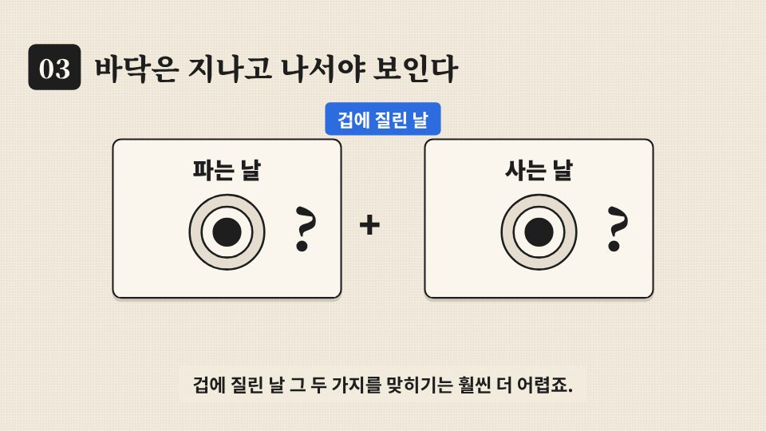
연출 48: '더 싸게 다시 사려면 → 둘 다 맞혀야'(둘 다 형광펜) + 과녁 카드 '파는 날' ✓ + '사는 날' ✓ / 49: 머리글이 파랑 '겁에 질린 날'로 바뀌고 두 ✓가 '?'로 바뀜
연결 근거 문장 48 '파는 날과 사는 날을 둘 다 맞혀야' / 49 '겁에 질린 날 그 두 가지를 맞히기는 훨씬 더 어렵죠' → ✓가 ?로
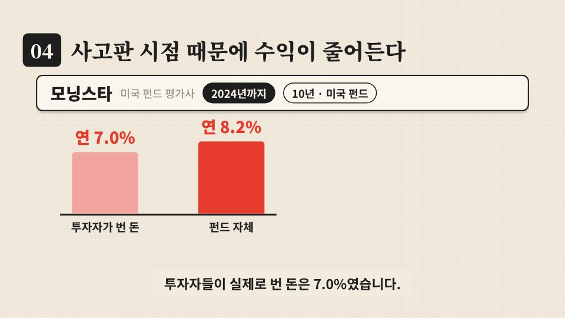
연출 50: 번호 타이틀 04 '사고판 시점 때문에' / (뒷줄) '수익이 줄어든다' / 51: 카드 '모닝스타 · 미국 펀드 평가사 · 2024년까지' / (뒷줄) '10년 · 미국 펀드' / 52: 오른쪽 '펀드 자체' 빨강 막대 연 8.2% / (뒷줄) 왼쪽 '투자자가 번 돈' 연한 빨강 막대 연 7.0% / 53: 두 막대 차이 괄호 '1.2%p' / (뒷줄) '전체 수익' 막대 끝 15%가 빗금으로 빠지고 '15% 정도'(형광펜) '사고판 시점 때문에 사라짐'
연결 근거 문장 50 '사고판 시점 때문에 투자자가 가져가는 수익이 줄어든다' / 51 '모닝스타가 2024년까지 10년 동안 미국 펀드' / 52 '펀드 자체는 1년에 8.2% … 투자자들이 실제로 번 돈은 7.0%' / 53 '1년에 1.2%포인트, 전체 수익의 15% 정도'
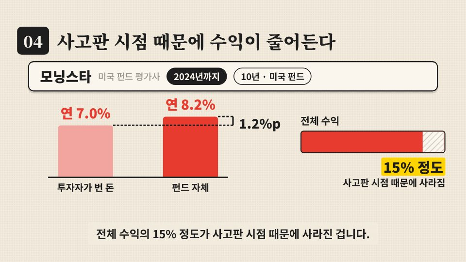
연출 50: 번호 타이틀 04 '사고판 시점 때문에' / (뒷줄) '수익이 줄어든다' / 51: 카드 '모닝스타 · 미국 펀드 평가사 · 2024년까지' / (뒷줄) '10년 · 미국 펀드' / 52: 오른쪽 '펀드 자체' 빨강 막대 연 8.2% / (뒷줄) 왼쪽 '투자자가 번 돈' 연한 빨강 막대 연 7.0% / 53: 두 막대 차이 괄호 '1.2%p' / (뒷줄) '전체 수익' 막대 끝 15%가 빗금으로 빠지고 '15% 정도'(형광펜) '사고판 시점 때문에 사라짐'
연결 근거 문장 50 '사고판 시점 때문에 투자자가 가져가는 수익이 줄어든다' / 51 '모닝스타가 2024년까지 10년 동안 미국 펀드' / 52 '펀드 자체는 1년에 8.2% … 투자자들이 실제로 번 돈은 7.0%' / 53 '1년에 1.2%포인트, 전체 수익의 15% 정도'
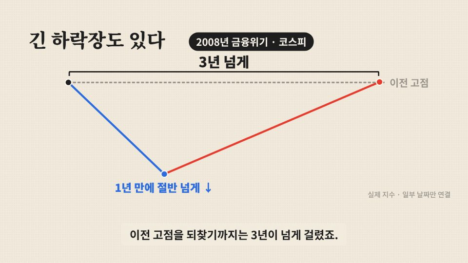
연출 54: 헤드라인 '긴 하락장도 있다' / 55: '2008년 금융위기 · 코스피' 칩, 실제 지수 선이 1년 동안 파랑으로 내려가 '1년 만에 절반 넘게 ↓' / 56: '이전 고점' 점선, 빨강 선이 다시 올라 이전 고점에 닿고, 위 괄호 '3년 넘게'
연결 근거 문장 54 '하락장이 길게 이어질 때도' / 55 '2008년 금융위기 때 코스피는 1년 만에 절반 넘게' / 56 '이전 고점을 되찾기까지는 3년이 넘게'. 점은 README 2007-10-31 2,064.85 · 2008-10-24 938.75 · 2011-01-03 2,070.08, 가로는 실제 시간 비율
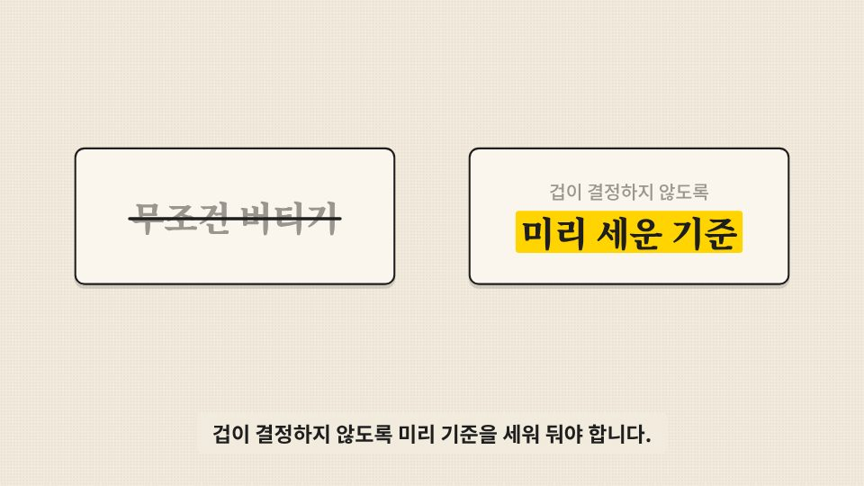
연출 57: 왼쪽 카드 '무조건 버티기'(회색)에 취소선 / (뒷줄) 오른쪽 카드 '겁이 결정하지 않도록' + '미리 세운 기준'(형광펜) / 58: 카드 퇴장, '하락장에서는 어떻게?'
연결 근거 문장 57 '무조건 버티라는 게 아니라, 겁이 결정하지 않도록 미리 기준을' (기준 카드는 뒷줄) / 58 '하락장에서는 어떻게 해야 할까요?'
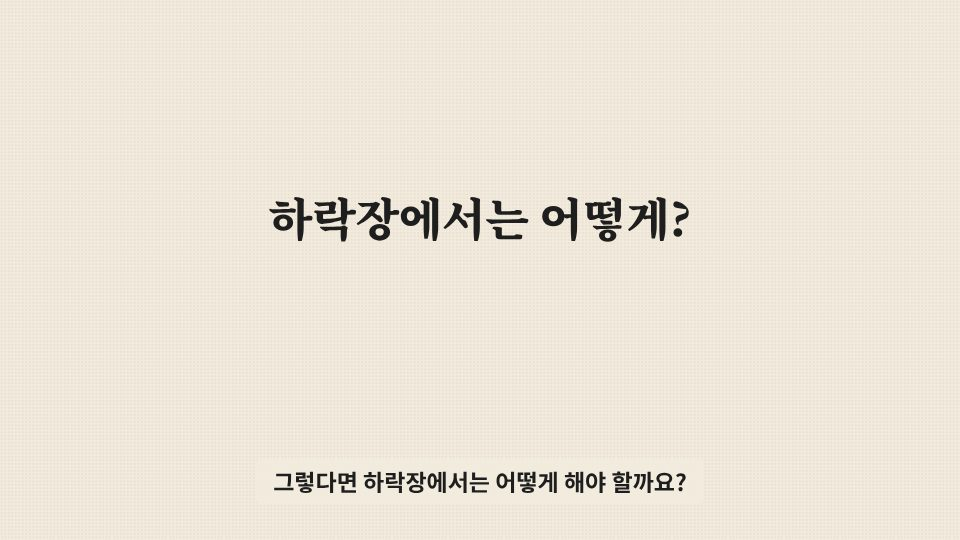
연출 57: 왼쪽 카드 '무조건 버티기'(회색)에 취소선 / (뒷줄) 오른쪽 카드 '겁이 결정하지 않도록' + '미리 세운 기준'(형광펜) / 58: 카드 퇴장, '하락장에서는 어떻게?'
연결 근거 문장 57 '무조건 버티라는 게 아니라, 겁이 결정하지 않도록 미리 기준을' (기준 카드는 뒷줄) / 58 '하락장에서는 어떻게 해야 할까요?'
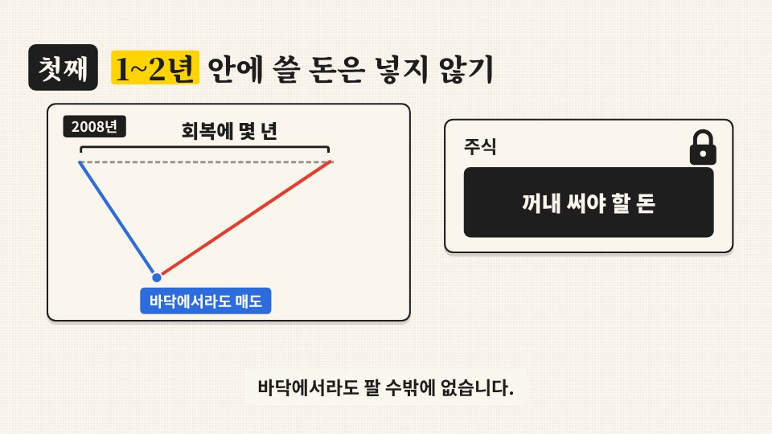
연출 59: 밝은 크림 전환, 번호 타이틀 '첫째 1~2년 안에 쓸 돈은 넣지 않기'(1~2년 형광펜) / 60: 패널 '2008년' + S19와 같은 모양의 작은 선(하락 → 회복) + 괄호 '회복에 몇 년' / 61: 오른쪽 카드 '주식' 안에 '꺼내 써야 할 돈' + 자물쇠 / (뒷줄) 선의 바닥에 파랑 칩 '바닥에서라도 매도'
연결 근거 문장 59 '1~2년 안에 쓸 돈은 처음부터 주식에 넣지 않는' / 60 '2008년처럼 회복에 몇 년이 걸리는 하락장' → S19의 선 / 61 '꺼내 써야 할 돈이 주식에 묶여 있으면 바닥에서라도 팔 수밖에' (바닥 칩은 뒷줄)
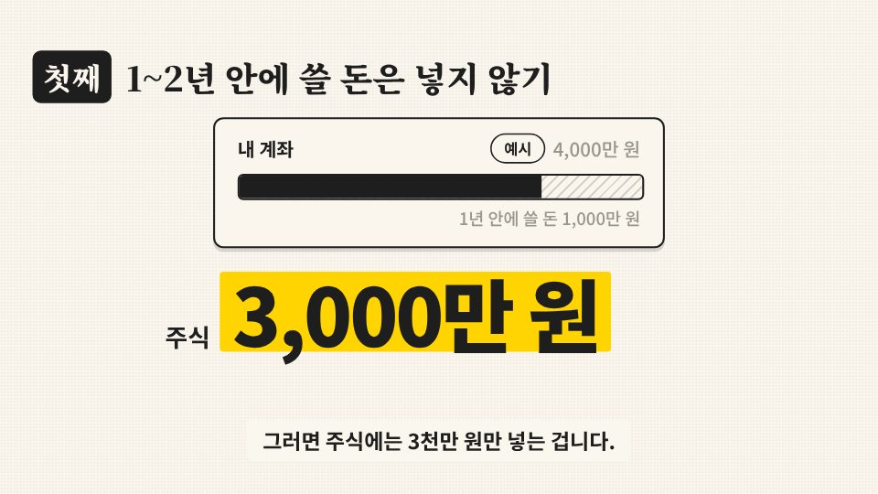
연출 62: S02의 계좌 카드(간단형, '예시 · 4,000만 원'), 막대 끝 1/4이 빗금(현금)으로 바뀌며 '1년 안에 쓸 돈 1,000만 원' / 63: 아래 '주식 3,000만 원'(형광펜)
연결 근거 문장 62 '4천만 원 중 1년 안에 쓸 돈이 1천만 원' / 63 '주식에는 3천만 원만'
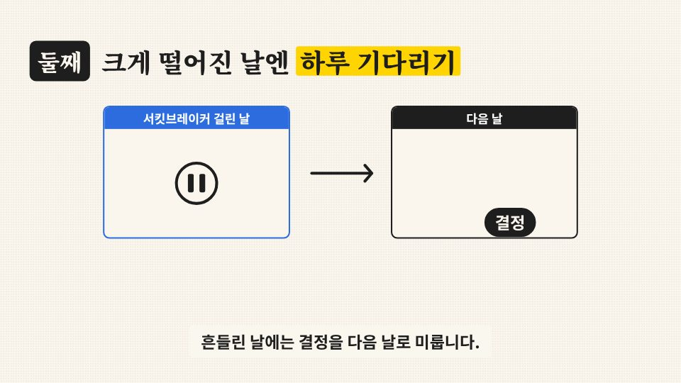
연출 64: 번호 타이틀 '둘째 크게 떨어진 날엔 하루 기다리기'('하루 기다리기' 형광펜) / 65: 파랑 날짜 칸 '서킷브레이커 걸린 날'(S03과 같은 일시정지 표시) / (뒷줄) 화살표 → '다음 날' 칸, '결정' 칩이 다음 날 칸으로 옮겨감 / 66: 퇴장, 오른쪽 '3월 5일에 팔았다면' / (뒷줄) -460만 원 카운트 + 파랑 막대 / 67: 왼쪽 '3월 4일 전부 매도' -800만 원 넘게 + 더 긴 파랑 막대, 오른쪽 '절반 가까이 ↓'(형광펜)
연결 근거 문장 64 '크게 떨어진 날에는 사고팔지 않고 하루를 기다리는' / 65 '서킷브레이커가 걸릴 만큼 … 결정을 다음 날로' / 66 '3월 5일에 팔았다면 손실은 460만 원' (숫자는 뒷줄) / 67 '800만 원 넘게 잃은 것과 비교하면 절반 가까이'. 막대 길이 460 : 818 (README)
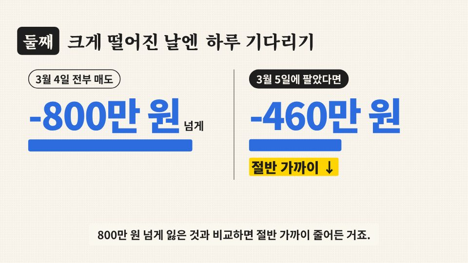
연출 64: 번호 타이틀 '둘째 크게 떨어진 날엔 하루 기다리기'('하루 기다리기' 형광펜) / 65: 파랑 날짜 칸 '서킷브레이커 걸린 날'(S03과 같은 일시정지 표시) / (뒷줄) 화살표 → '다음 날' 칸, '결정' 칩이 다음 날 칸으로 옮겨감 / 66: 퇴장, 오른쪽 '3월 5일에 팔았다면' / (뒷줄) -460만 원 카운트 + 파랑 막대 / 67: 왼쪽 '3월 4일 전부 매도' -800만 원 넘게 + 더 긴 파랑 막대, 오른쪽 '절반 가까이 ↓'(형광펜)
연결 근거 문장 64 '크게 떨어진 날에는 사고팔지 않고 하루를 기다리는' / 65 '서킷브레이커가 걸릴 만큼 … 결정을 다음 날로' / 66 '3월 5일에 팔았다면 손실은 460만 원' (숫자는 뒷줄) / 67 '800만 원 넘게 잃은 것과 비교하면 절반 가까이'. 막대 길이 460 : 818 (README)
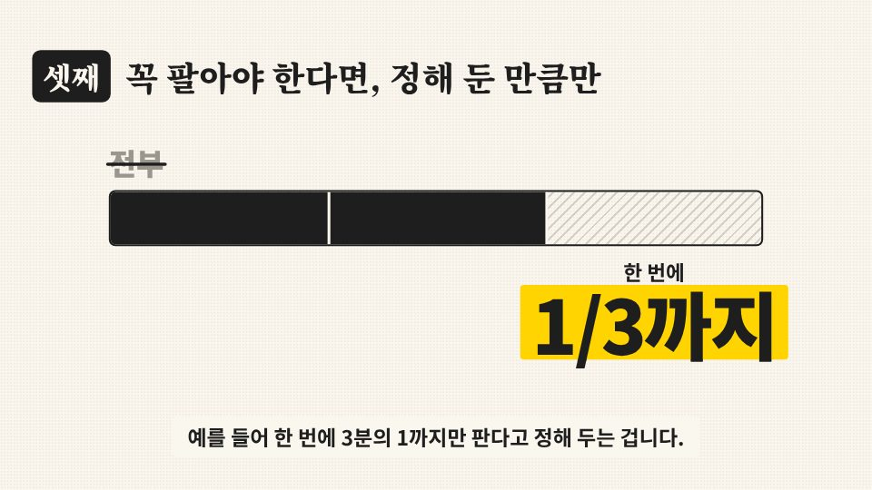
연출 68: 번호 타이틀 '셋째 꼭 팔아야 한다면, 정해 둔 만큼만', 잉크 막대 + '전부'에 취소선 / 69: 막대가 3칸으로 나뉘고 오른쪽 1칸이 빗금(현금), '한 번에 1/3까지'(형광펜)
연결 근거 문장 68 '전부가 아니라 정해 둔 만큼만 나눠 파는' / 69 '한 번에 3분의 1까지만 판다고'
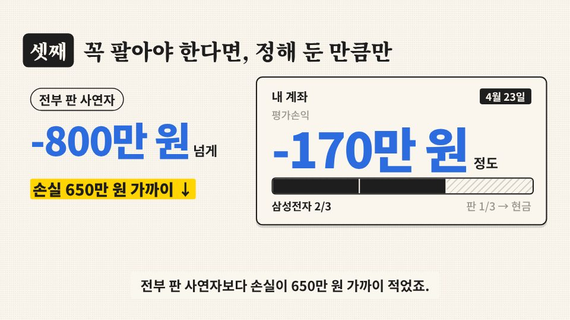
연출 70: 오른쪽에 S02의 계좌 카드(머리 '3월 4일', -800만 원 넘게), 막대 3칸 중 1칸이 현금으로 '삼성전자 2/3 · 판 1/3 → 현금' / (뒷줄) 머리 '4월 23일', 평가손익 -800만 → -170만 원 '정도' / 71: 왼쪽 '전부 판 사연자 -800만 원 넘게' + '손실 650만 원 가까이 ↓'(형광펜) / 72: 형광펜 퇴장, 카드의 판 1/3 칸에 ✗, '틀려도 1/3만'(형광펜)
연결 근거 문장 70 '3월 4일 3분의 1만 팔았다면, 4월 23일 계좌는 -170만 원 정도' (4월 23일·-170은 뒷줄) / 71 '전부 판 사연자보다 손실이 650만 원 가까이 적었죠' / 72 '판 쪽이 틀려도 크게 틀리지 않게'
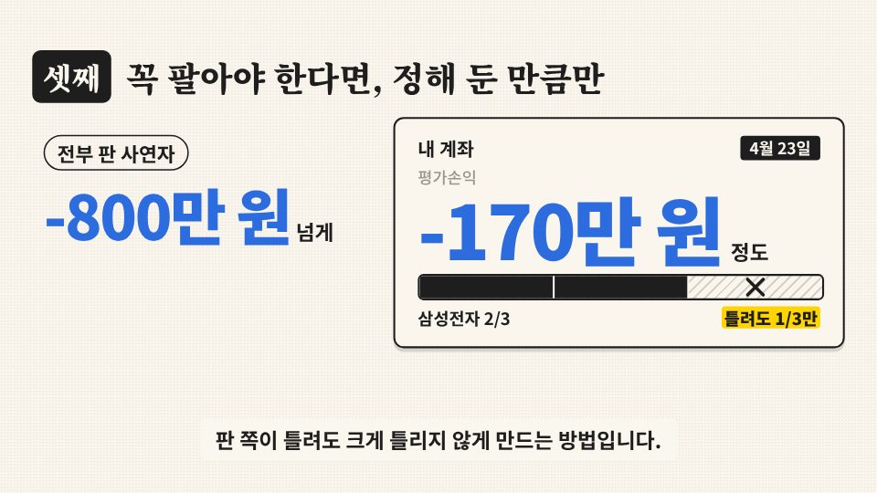
연출 70: 오른쪽에 S02의 계좌 카드(머리 '3월 4일', -800만 원 넘게), 막대 3칸 중 1칸이 현금으로 '삼성전자 2/3 · 판 1/3 → 현금' / (뒷줄) 머리 '4월 23일', 평가손익 -800만 → -170만 원 '정도' / 71: 왼쪽 '전부 판 사연자 -800만 원 넘게' + '손실 650만 원 가까이 ↓'(형광펜) / 72: 형광펜 퇴장, 카드의 판 1/3 칸에 ✗, '틀려도 1/3만'(형광펜)
연결 근거 문장 70 '3월 4일 3분의 1만 팔았다면, 4월 23일 계좌는 -170만 원 정도' (4월 23일·-170은 뒷줄) / 71 '전부 판 사연자보다 손실이 650만 원 가까이 적었죠' / 72 '판 쪽이 틀려도 크게 틀리지 않게'
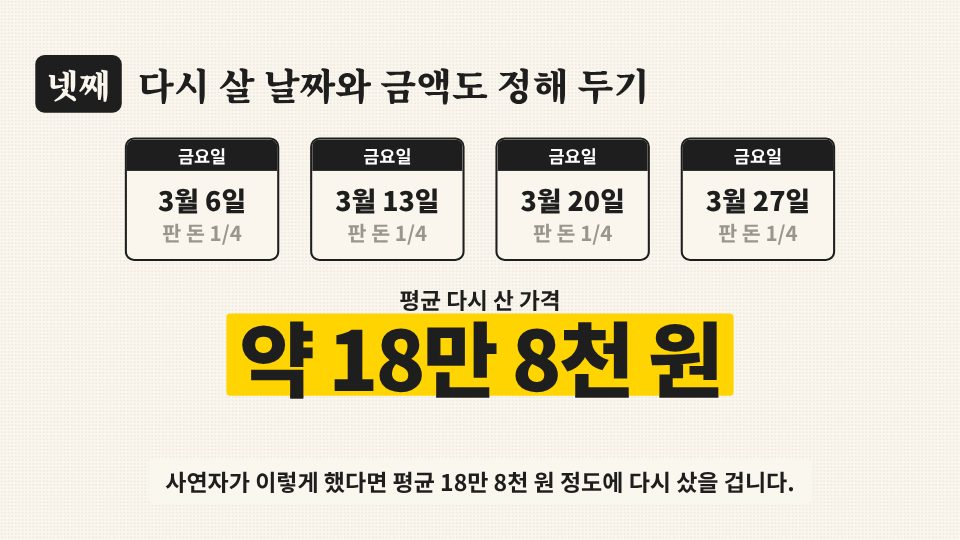
연출 73: 번호 타이틀 '넷째 다시 살 날짜와 금액도 정해 두기' / 74: 날짜 칸 4개 '금요일 3월 6일 · 13일 · 20일 · 27일' + 각 '판 돈 1/4' / 75: '평균 다시 산 가격' + '약 18만 8천 원'(형광펜)
연결 근거 문장 74 '판 돈을 4주 동안 매주 금요일에 4분의 1씩' → 3/4 뒤 네 번의 금요일(README 계산) / 75 '평균 18만 8천 원 정도에'
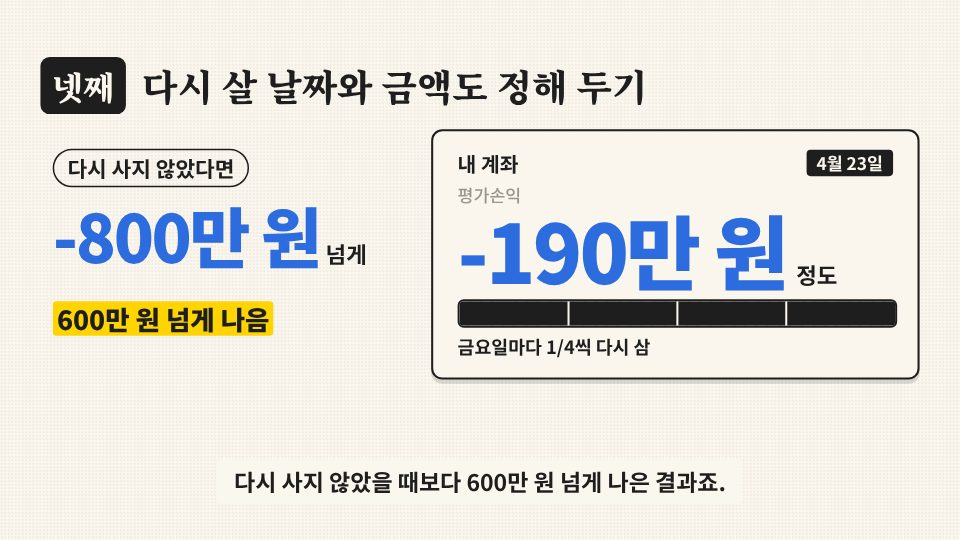
연출 76: 오른쪽 S02의 계좌 카드(머리 '4월 23일', 막대 4칸 다시 삼성전자) 평가손익 -800만 → -190만 원 '정도' / 77: 왼쪽 '다시 사지 않았다면 -800만 원 넘게' + '600만 원 넘게 나음'(형광펜) / 78: 퇴장, S26의 금요일 칸 4개에 ✓ 차례로, 아래 '판 가격' 점선 위로 빨강 점 4개(실제 종가 비율) + '판 가격보다 비싸도 정해 둔 날 그대로'(형광펜)
연결 근거 문장 76 '4월 23일 계좌는 -190만 원 정도' / 77 '다시 사지 않았을 때보다 600만 원 넘게 나은' / 78 '판 가격보다 비싸게 사야 해도, 정해 둔 날이 되면 그대로 사는 게 핵심'. 점 높이는 README 188,200 · 183,500 · 199,400 · 180,100원 vs 판 가격 172,200원, 숫자 표시 안 함
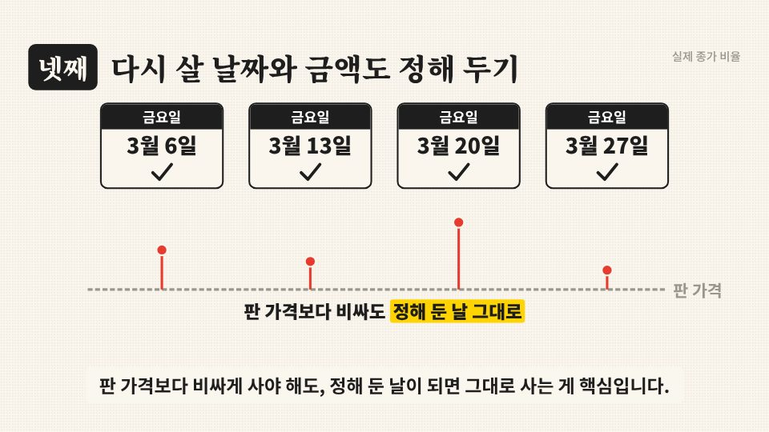
연출 76: 오른쪽 S02의 계좌 카드(머리 '4월 23일', 막대 4칸 다시 삼성전자) 평가손익 -800만 → -190만 원 '정도' / 77: 왼쪽 '다시 사지 않았다면 -800만 원 넘게' + '600만 원 넘게 나음'(형광펜) / 78: 퇴장, S26의 금요일 칸 4개에 ✓ 차례로, 아래 '판 가격' 점선 위로 빨강 점 4개(실제 종가 비율) + '판 가격보다 비싸도 정해 둔 날 그대로'(형광펜)
연결 근거 문장 76 '4월 23일 계좌는 -190만 원 정도' / 77 '다시 사지 않았을 때보다 600만 원 넘게 나은' / 78 '판 가격보다 비싸게 사야 해도, 정해 둔 날이 되면 그대로 사는 게 핵심'. 점 높이는 README 188,200 · 183,500 · 199,400 · 180,100원 vs 판 가격 172,200원, 숫자 표시 안 함
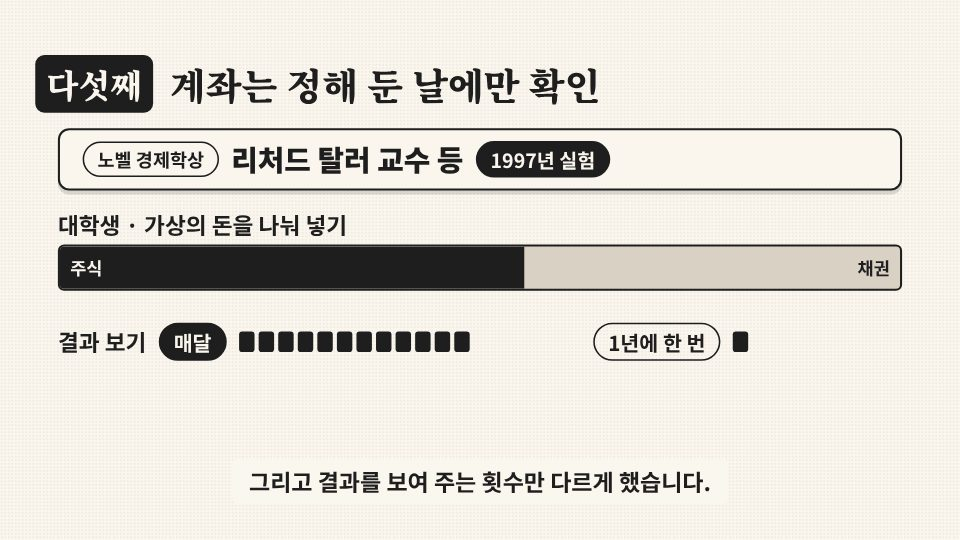
연출 79: 번호 타이틀 '다섯째 계좌는 정해 둔 날에만 확인' / 80: 카드 '노벨 경제학상 · 리처드 탈러 교수 등' / (뒷줄) '1997년 실험' / 81: '대학생 · 가상의 돈을 나눠 넣기' + 주식|채권 나눔 막대의 경계가 움직임 / 82: '결과 보기: 매달'(칸 12개) vs '1년에 한 번'(칸 1개)
연결 근거 문장 80 '노벨 경제학상을 받은 리처드 탈러 교수 등이 1997년에 발표한 실험' (1997년은 뒷줄) / 81 '대학생들에게 가상의 주식과 채권에 돈을 나눠' / 82 '결과를 보여 주는 횟수만 다르게'
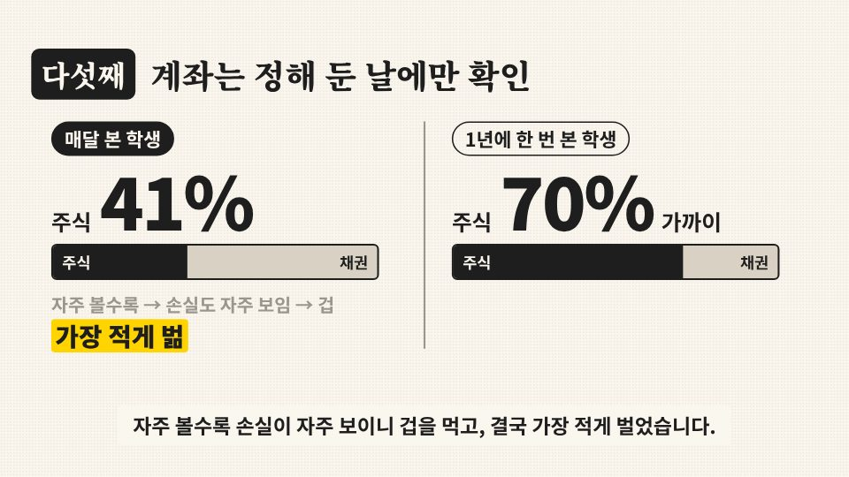
연출 83: 왼쪽 '매달 본 학생' 주식 41% 카운트 + 나눔 막대 41% / 84: 오른쪽 '1년에 한 번 본 학생' 주식 70% 가까이 + 막대 70% / 85: 왼쪽 '자주 볼수록 → 손실도 자주 보임 → 겁' + '가장 적게 벎'(형광펜)
연결 근거 문장 83 '매달 본 학생들은 주식에 41%만' / 84 '1년에 한 번 본 학생들은 70% 가까이' / 85 '자주 볼수록 손실이 자주 보이니 겁을 먹고, 결국 가장 적게 벌었습니다'
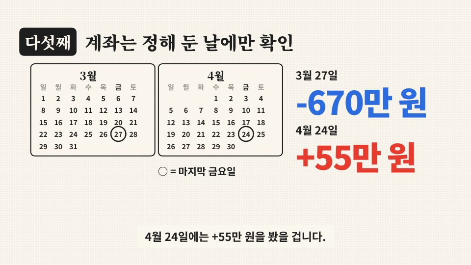
연출 86: 3월·4월 달력, 마지막 금요일(27일·24일)에 동그라미 + '○ = 마지막 금요일' / 87: 오른쪽 '3월 27일 -670만 원'(파랑) / (뒷줄) '4월 24일 +55만 원'(빨강) / 88: 3월 달력 4일 칸이 파랑, ✗ '3월 4일 계좌 안 봄'(형광펜)
연결 근거 문장 86 '매달 마지막 금요일에만 열어 보는' (2026년 3월 1일 일요일, 4월 1일 수요일) / 87 '3월 27일에는 -670만 원, 4월 24일에는 +55만 원' (4월 24일은 뒷줄) / 88 '매일 보지 않았다면 3월 4일의 공포를 계좌 화면으로 마주할 일도 없었겠죠'
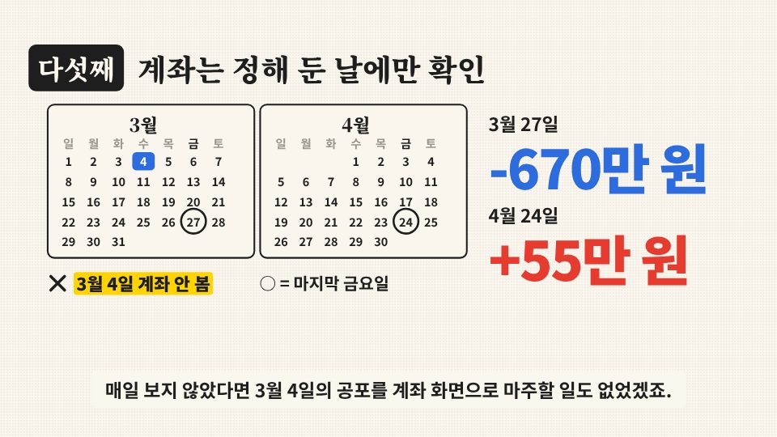
연출 86: 3월·4월 달력, 마지막 금요일(27일·24일)에 동그라미 + '○ = 마지막 금요일' / 87: 오른쪽 '3월 27일 -670만 원'(파랑) / (뒷줄) '4월 24일 +55만 원'(빨강) / 88: 3월 달력 4일 칸이 파랑, ✗ '3월 4일 계좌 안 봄'(형광펜)
연결 근거 문장 86 '매달 마지막 금요일에만 열어 보는' (2026년 3월 1일 일요일, 4월 1일 수요일) / 87 '3월 27일에는 -670만 원, 4월 24일에는 +55만 원' (4월 24일은 뒷줄) / 88 '매일 보지 않았다면 3월 4일의 공포를 계좌 화면으로 마주할 일도 없었겠죠'
연출 89: 두 열 요약 — 왼쪽 '위험한 이유' 01~04 / (뒷줄) 오른쪽 '지킬 기준' 첫째~다섯째 / 90: 요약 퇴장, 휴대폰 '다 팔고 싶은 날' ✓ '오늘 폭락한 날?' / (뒷줄) ✓ '곧 써야 할 돈?' / 91: '성공 투자' / 92: 유지 후 페이드아웃
연결 근거 문장 89 '다 팔아 버리면 위험한 이유와 지킬 기준' (지킬 기준은 뒷줄) / 90 '오늘이 폭락한 날인지, 이 돈을 곧 써야 하는지부터 확인' (곧 쓸 돈은 뒷줄) / 91 '성공 투자 하셨으면'
연출 89: 두 열 요약 — 왼쪽 '위험한 이유' 01~04 / (뒷줄) 오른쪽 '지킬 기준' 첫째~다섯째 / 90: 요약 퇴장, 휴대폰 '다 팔고 싶은 날' ✓ '오늘 폭락한 날?' / (뒷줄) ✓ '곧 써야 할 돈?' / 91: '성공 투자' / 92: 유지 후 페이드아웃
연결 근거 문장 89 '다 팔아 버리면 위험한 이유와 지킬 기준' (지킬 기준은 뒷줄) / 90 '오늘이 폭락한 날인지, 이 돈을 곧 써야 하는지부터 확인' (곧 쓸 돈은 뒷줄) / 91 '성공 투자 하셨으면'
연출 89: 두 열 요약 — 왼쪽 '위험한 이유' 01~04 / (뒷줄) 오른쪽 '지킬 기준' 첫째~다섯째 / 90: 요약 퇴장, 휴대폰 '다 팔고 싶은 날' ✓ '오늘 폭락한 날?' / (뒷줄) ✓ '곧 써야 할 돈?' / 91: '성공 투자' / 92: 유지 후 페이드아웃
연결 근거 문장 89 '다 팔아 버리면 위험한 이유와 지킬 기준' (지킬 기준은 뒷줄) / 90 '오늘이 폭락한 날인지, 이 돈을 곧 써야 하는지부터 확인' (곧 쓸 돈은 뒷줄) / 91 '성공 투자 하셨으면'